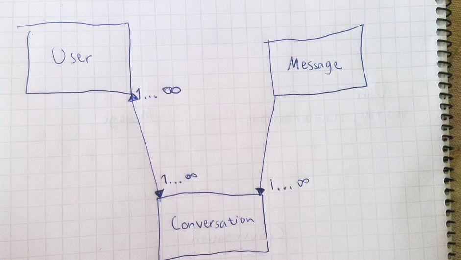
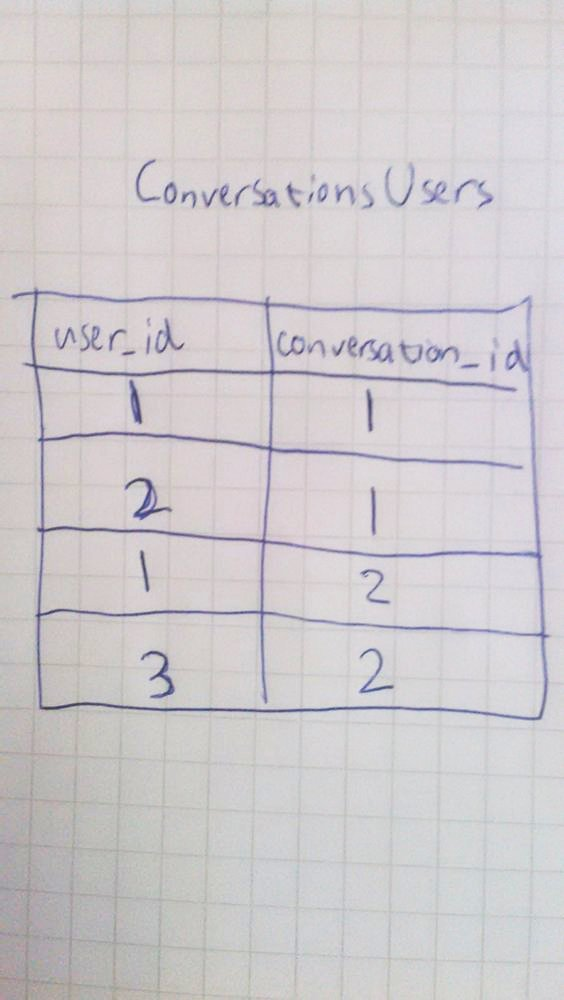

Reaaliaika-chat
Tässä osassa tulee paljon uutta asiaa. Koodaamme reaaliaikaisen chatin jossa kaksi käyttäjää pystyvät keskustelemaan keskenään. Luomme Conversation- ja Message- mallit. Niiden ja käyttäjän välille täytyy luoda sopivat tietokantayhteydet. Sen jälkeen koodataan controllereihin ja vieweihin viestien lähetyksen ja lukemisen toiminnallisuudet.

Täytyy siis koodata mahdollisuudet siihen, että
1) Käyttäjä voi kuulua useampaan keskusteluun ja keskustelulla voi olla kaksi käyttäjää
2) Keskusteluun kuuluu monta viestiä, mutta yksi viesti voi kuulua vain yhteen keskusteluun.
Luodaan mallit Conversation ja Message sekä yhteydet
Luodaan ensin scaffoldaamalla Conversation.
rails g scaffold Conversation
Aja migraatiot
Keskustelukysymykset: Millä komennolla ajat migraatiot? Mitä sen jälkeen kannattaa alkaa tekemään?
Luodaan yhteys käyttäjän ja Conversationin välille
Lue
tutoriaali Eli siis, ensimmäinen askel on lisätä app/models/user.rb-tiedostoon
has_and_belongs_to_many :conversations
Sen jälkeen app/models/conversation.rb -tiedostoon
has_and_belongs_to_many :users
Tämä ei vielä riitä. Rails on siitä hyvä että voimme tehdä paljon asioita ymmärtämättä tietokantatauluista erityisemmin. Nyt kyllä pitäisi ymmärtää mitä olemme seuraavaksi tekemässä. Haluamme luoda seuraavanlaisen tietokantataulun

komennolla
rails g migration CreateConversationsUsers conversation_id:integer user_id:integer
ConversationsUsers on taulu, joka yhdistää Conversationit ja Userit. Jokaisella Conversationilla ja Userilla on oma yksilöllinen numero-ID.
Keskustelukysymys: Mitä kuvassa tapahtuu?